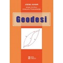
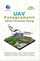
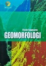

Kelompok 8
Feb 26, 2022
Kelompok 8
Feb 26, 2022

Geodetic Information Market
Geodetic Information Market
GIM (Geodetic Information Market) adalah perusahaan yang menyediakan informasi terkait geodesi. Selan informasi, kami juga menawarkan jasa, yaitu jasa pembuatan peta dan jasa pembelian buku tentang keilmuan geodesi. Nama GIM sendiri memiliki makna, kata Geodetic berarti geodesi. Information bisa kita kaitkan dengan informasi. Sementara market itu sendiri berarti pasar. Jika digabung, maka makna dari GIM adalah pasar (tempat jual beli) yang menyediakan informasi terkait geodesi.
Konsep usaha yang dikembangkan dalam usaha kami adalah menggunakan website sebagai media penjualan jasa. Selain itu, kami menggunakan platform lain, yaitu Instagram untuk membantu promosi dalam mengambil target pasar kami.
Bentuk Usaha
Usaha GIM (Geodetic Information Market) menyediakan dua sektor yang terbagi atas perdagangan barang dan jasa:
- Pembuatan Peta Meningkatnya kebutuhan peta tidak lepas dari adanya kelebihan peta yang sebelumnya hanya sebagai alat navigasi sekarang berubah menjadikan peta sebagai media yang efektif untuk menyajikan data dan informasi spasial. Bentuk dari usaha kami yang pertama adalah jasa pembuatan peta, dimana di dalam usaha ini kami menyediakan laman khusus di web bagi seseorang yang akan menggunakan jasa kami nanti.
-
Berikut adalah beberapa keunggulan dari jasa pembuatan peta kami:
- Pemesanan dilakukan secara praktis melalui laman web
- Tidak memerlukan bahan baku karena dikerjakan dan diproses oleh kami.
- Buku Keilmuan Geodesi Pada penjualan buku keilmuan geodesi, GIM (Geodetic Information Market) menyediakan buku orisinil dan terpercaya juga pastinya, buku keilmuan geodesi yang kami sediakan antara lain:
Contoh Produk

| NO | JUDUL BUKU | PENGARANG | BUKU | HARGA |
|---|---|---|---|---|
| 1 | Geodesi: Teknik Kuadrat Terkecil | Joenil Kahar |  |
Rp55.000 |
| 2 | Survei dengan GPS | Prof. Dr. Hasanuddin Z. Abidin |  |
Rp83.000 |
| 3 | Geodesi | Joenil Kahar |  | Rp130.000 |
| 4 | Ensiklopedia Geografi: Penginderaan Jauh | Nur Fitriana Sari |  |
Rp82.000 |
| 5 | Uav Fotogrametri Dalam Penataan Ruang | BOBBY SANTOSO, DKK |  | Rp85.000 |
| 6 | Perencanaan Pembangunan Wilayah Edisi Revisi | Prof.Drs.Robinson Tarigan ,M.R.P. | Rp102.000 | |
| 7 | Geologi Teknik | Didi S. Agustawijaya |  |
Rp108.000 |
| 8 | Kalkulus Jilid 01 Edisi 09 | Purcell |  |
Rp365.000 |
| 9 | Kalkulus 2 Edisi 9 | Purcell, Verberg |  |
Rp365.000 |
| 10 | Geomorfologi | I Gede Sugiyanta |  | Rp155.000 |
| 11 | Analisis Dan Perancangan Sistem Basis Data | WAHYUNI REKSOATMODJO |  |
Rp115.000 |
| 12 | Manajemen Proyek Berbasis Teknologi Informasi + CD Revisi Kedua | Imam Heryanto & Totok Triwibowo |  |
Rp118.000 |